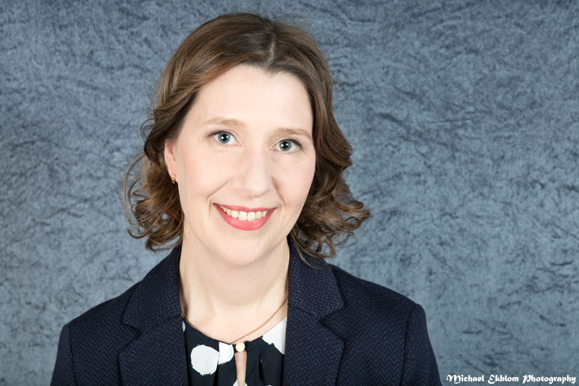

<!DOCTYPE html>
<html lang="FI"></html>

<link rel="stylesheet" href="styles.css">
<script src="javascript.js"></script>

<html>
<head>
<title>Minna Boman</title>

<div class="sticky">
<nav id="Navigointi">
    <ul>
        <li><a href="#">Koti</a></li>
        <li><a href="#sidebar">Esittely</a></li>
        <li><a href="#Työkokemus">Työkokemus</a></li>
        <li><a href="#Koulutus">Koulutus</a></li>
        <li><a href="#">Yhteystiedot</a></li>
    </ul>
</div>
</nav>
</head>

<body>

<h1>MINNA BOMAN</h1>



<div class="Container">
<section>
<aside id= "sidebar">
    <p>Olen energinen ja tehokas liiketalouden tradenomi (ylempi AMK), 
        jolla on monipuolinen kokemus erilaisista projektien koordinointitehtävistä 
        sekä asiantuntija- että kansainvälistä liiketoimintaa harjoittavissa yrityksissä.
        </p> 
</aside>
</section>

<section>
    <h2 id="Työkokemus">TYÖKOKEMUS</h2>
    <button onclick ="myFunction2()"> + / - </button>
    <div id="myDiv1">
    <h4>Projektipäällikkö, <a href="https://www.palava.global/" title="Palava Global" target="_blank">Palava Global Oy</a></h4>
    <small>12/2019 - nykyinen</small>
    <p>Nykyisessä tehtävässäni toimin projektipäällikkönä iältään nuoressa
        kansainvälistämistoimistossa. Olen vastuussa hyvin vaihtelevasti mm.
        asiakasprojektien aikatauluttamisesta, toimiston juoksevien asioiden
        hoitamisesta, laskutuksesta ja osallistun erilaisiin asiakasprojekteihin eri
        rooleissa. Myös sisäisten kehitysprojektien suunnittelu ja niiden toteutus
        kuuluvat minulle yhteistyössä tiimin muiden jäsenten kanssa.
        Pienessä yrityksessä osallistun hyvin monipuolisesti myös yrityksen
        taloushallintoon ja sen HR-toimintoihin.
    </p>

    <h4>Projektikoordinaattori (medical), <a href="https://www.sgs.fi/" title="SGS Fimko" target="_blank">SGS Fimko Oy</a></h4>
    <small>6/2019 - 11/2019</small>
    <p>Toimin projektikoordinaattorina ilmoitetun laitoksen mukaisille
        sertifiointiprojekteille liittyen medical-yksikön asiakkuuksiin osana
        ilmoitetun laitoksen auditointitiimiä. Olin vastuussa mm. auditoijien
        auditointien aikatauluttamisesta, projektien etenemisen seuraamisesta,
        yhteydenpidosta asiakkaisiin ja Aasiassa toimiviin affiliaatteihin sekä mm.
        laskutuksesta. Tavoitteenani oli luoda hyvin toimivat prosessit toiminnan
        sujuvoittamiseksi ja sainkin kiitosta toiminnan paranemisesta.
    </p>

    <h4>Local Tray coordinator, <a href="https://www.molnlycke.fi/" title="Mölnlycke" target="_blank">Mölnlycke Health Care Oy</a></h4>
    <small>3/2006 - 6/2019</small>
    <p>Local Tray Coordinatorin tehtävässä olin vastuussa asiakasräätälöityjen
        leikkauspakkausten päivittäisen toiminnan sujumisesta Suomessa.
        Suunnittelin mm. pakkausten sisältöjä ja avustin aluepäälliköitä pakkausten
        eri vaiheissa aina tuotannon käynnistämisestä toimitusvarmuuden
        maksimoimiseen. Uusia toimintatapoja ja työkaluja tehtävien
        hoitamiseen luomalla ja myyntitiimiä tukemalla minulla oli vahva osuus
        Mölnlycken asiakasräätälöityjen leikkauspakkausten toiminnan
        menestymisessä Suomessa. Erinomainen priorisointikykyni ja
        järjestäytyneet toimintatapani auttoivat organisaatiota saavuttamaan
        tavoitteensa jatkuvasti.
    </p>

    <h4>Tuotepäällikkö, kirurgiset tuotteet, <a href="https://www.molnlycke.fi/" title="Mölnlycke" target="_blank">Mölnlycke Health Care Oy</a></h4>
    <small>1/2005 - 3/2006</small>
    <p>Kirurgisten tuotteiden tuotepäällikkönä vastasin erilaisten
        markkinointiaktiviteettien suunnittelusta, toteuttamisesta ja niiden
        vaikutusten seurannasta pohjoismaisiin ja paikallisiin suunnitelmiin
        perustuen. Vastuullani oli myös kirurgisten tuotteiden markkinointibudjetti.
        Onnistuin onnistuneiden tuotelanseerausten ja oikein
        kohdennettujen markkinointiaktiviteettien ansiosta myynnin
        kasvattamisessa. Aluepäälliköiden kanssa tiiminä toimiminen johti
        erinomaisiin myyntituloksiin. Sain aluepäälliköiltä kiitosta myynnin
        tukena toimiessani mm. nopeasta reagoinnistani heidän pyyntöihinsä.
    </p>

    <h4>Myynti- ja markkinointikoordinaattori (haavanhoito- ja kirurgiset tuotteet), <a href="https://www.molnlycke.fi/" title="Mölnlycke" target="_blank">Mölnlycke Health Care Oy</a></h4>
    <small>7/2001 - 1/2005</small>
    <p>Tehtävässäni vastasin laajasta markkinointimateriaalien valikoimasta
        sekä suoramarkkinointikampanjoiden suunnittelusta ja toteuttamisesta
        haavanhoidon ammattilaisille. Tämän lisäksi järjestin näyttelyitä ja
        tapahtumia paikallisesti, osana pohjoismaista markkinointitiimiä.
        Päivitin suomenkielisiä nettisivuja, tuotin koulutusmateriaaleja ja
        järjestin asiakasuskollisuustapahtumia. Tukemalla tuotespesialisteja
        heidän työssään autoin tiimiä saavuttamaan asetetut myyntitavoitteet.
        Kykyni toteuttaa markkinointitoimenpiteet annetuissa aikatauluissa johti
        onnistuneisiin kampanjoihin.
    </p>

    <h4>Projektikoordinaattori, markkinointiassistentti, <a href="https://fi.wikipedia.org/wiki/Radiolinja" title="Radiolinja" target="_blank">Radiolinja Oy (nykyinen Elisa Oyj)</a></h4>
    <small>2/1999- 6/2001</small>
    <p>Projektiassistenttina minulla oli merkittävä rooli Radiolinjan vuosi 2000 -
        projektin onnistumisessa, sen dokumentoinnissa, avustamisessa ja
        hallinnoimisessa. Projektikoordinaattorin tehtävissä manageroin myös
        yrityksen projektisalkkua, osallistuin aktiivisesti projektityömallin
        kehittämiseen ja toimin Tuoteraadin sihteerinä. Olin työympäristössä
        pidetty työtoveri ja sain kiitosta hyvistä koordinointitaidoistani monelta
        eri organisaation taholta. Markkinointiassistenttina koordinoin ja toteutin
        erilaisia markkinointitoimenpiteitä ja -kampanjoita osana DjEsko -
        markkinointitiimiä. Tämän lisäksi seurasin markkinoinnin projektien
        ajantasaisuutta ja päivitin niiden projektisuunnitelmia.
    </p>
    </div>

</div>
</section>

<section>
    <div class="Container">
    <h2 id="Koulutus">KOULUTUS</h2> 
    <button onclick ="myFunction()"> + / - </button>
    <div id="myDiv2"> 
    <h4>Mimmit koodaa -Bootcamp, <a href="https://www.saranen.fi/" title="Saranen" target="_blank">Saranen Consulting</a></h4>
    <p>9/2020 Bootcamp-tyyppinen verkkokoulutus, jonka kesto oli 13 päivää. Koulutuksessa annettiin kattava yleiskuva Web-ohjelmistokehityksen ohjelmiin (HTML, CSS, JavaScript, C#) ja se antoi hyvän potkun jatkoon esim. itseopiskelun muodossa.</p>

    <h4>Henkilöstöjohtamisen perusteet, <a href="https://www.avoin.jyu.fi/fi" title="JYU" target="_blank">Jyväskylän avoin yliopisto</a></h4>
    <p>2018 - 2019, 27 opintopistettä. Henkilöstöjohtamisen opintokokonaisuus koostui henkilöstöjohtamisen kentälle sijoittuvista opinnoista. Opinnoissa luotiin tiedolliset, taidolliset ja asenteelliset valmiudet henkilöstön ja organisaatioiden vastuulliseen johtamiseen ja kehittämiseen.</p>

    <h4>Liiketalouden ylempi ammattikorkeakoulututkinto, <a href="https://www.laurea.fi/" title="Laurea" target="_blank">Laurea ammattikorkeakoulu</a></h4>
    <p>2007 - 2009 Yrittäjyyden ja liiketoimintaosaamisen koulutusohjelma</p>

    <h4>Bachelor of Business Administration BBA, <a href="https://www.hh.se/english.html" title="HH" target="_blank">Högskolan i Halmstad</a></h4>
    <p>1996 - 1998 Pääaineina markkinointi ja IT</p>

    <h4>Tradenomi, <a href="https://www.mercuria.fi/" title="Mercuria" target="_blank">Mercuria Business School</a></h4>
    <p>1993 - 1997 Pääaineena kansainväliset toiminnot</p>

    <h4>Ylioppilas, <a href="http://www.etela-tapiola.fi/" title="Etelä-Tapiola" target="_blank">Etelä-Tapiolan lukio</a></h4>
    <p>1990 - 1993 yleisarvosana L</p>

    </div>
    
</div>
</section>

<footer id="main-footer">
    <p>Copyright &copy; 2020 Minna Boman</p>
</footer>

</body>

</html> 